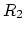
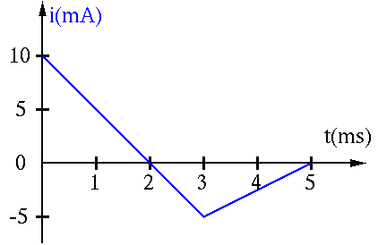

- The electron gun of a cathode-ray tube (CRT) generates a beam
of electrons which is accelerated by a potential difference of
20,000 V over a distance of 4 cm. Find
- the strength of the electric field, and
- the power supplied to a beam of electrons.
Solution:
The strength of the field is
The charge carried by the beam is
The power supplied to the beam is
- (a) If two light bulbs both labeled as 110V and 40W in series are
connected to a socket outlet of 190V, what is the power consumption of
each of the bulbs?
Solution:
(b) Replace one of the two bulbs by another bulb labeled as 110V 15W, and
find the power consumption of each of the bulbs. What will happen to each
of the two bulbs? (Note that when the power consumption by a bulb is larger
than the specified wattage, it will be burned out!)
Solution:
- Measurement of a physical process by instruments may be tricky as
the instruments will inevitably affect the process being measured. The
figure below shows two possible configurations for the measurement of the
voltage across and the current through the load.

- What are required of the ammeter and the voltmeter to minimize their
influences on the measurements?
Solution:
The ammeter should have minimum (ideally 0) impedance while the voltmeter
should have maximum (ideally infinity) impedance.
- How would the ammeter and the voltmeter affect the measurement of the
current and the voltage in either of the configurations (a and b)?
Solution:
In (a) the voltmeter will by-pass some current so that the actual current
through the load is smaller than the reading of the ammeter;
in (b) the ammeter will cause some voltage drop and the actual voltage
across the load is lower than the reading of the voltmeter.
- Find voltage and resistance  in the circuit shown below:

(Note: The direction of a current and the polarity of a voltage source can
be assumedarbitrarily. To determined the actual direction and polarity, the
sign of the values also should be considered. For example, a current labeled
in left-to-right direction with a negative value is actually flowing
right-to-left.)
Solution:
- apply KCL to node B: ,
- apply KCL to node C: ,
- apply KCL to node D: ,
- apply KVL to loop ABCD:
,
- apply KVL to loop BDA:
,
, or
- apply KVL to loop BDC:
,
- Assume in the circuits in the figure, the voltage source is ,
the current source is , and the resistor is .
For both (a) and (b).
Find:
- the current going through each of the three elements
Solution:
- (a) I=1A going thru all 3 elements
- (b) 1A thru current source, 2/3A thru R, 1/3 thru voltage source.
- the voltage across each of the three elements
Solution:
- (a) 2V across voltage source, 3V across R, 5V across current source
- (b) 2V across all 3 elements.
- which of the power sources is delivering power and how much? which is
receiving power and how much? How much power is dissipated by the
resistor ?
Solution:
- (a) current source delivers 5W, R dissipates 3W, voltage source
receives 2W
- (b) current source delivers 2W, R dissipates 4/3W, voltage source
receives 2/3W
When receiving power, the voltage source is being charged.
- A current flowing in an initially uncharged 1-F capacitor is shown
in the figure as a function of time. Find and plot the voltage across the
capacitor produced by this current.
